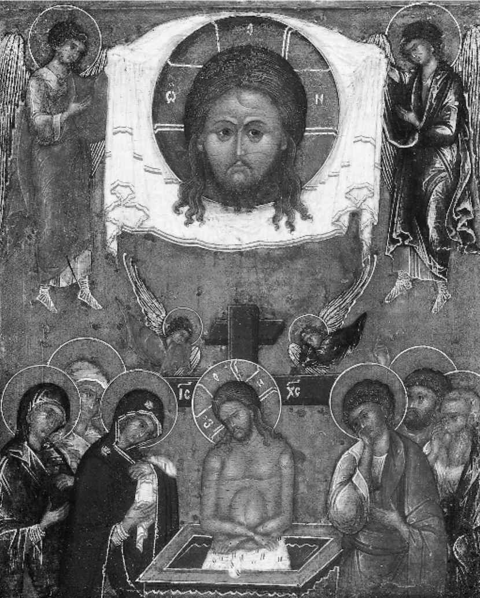

（瓦西里·罗扎诺夫，1913年）
在普希金的大多数作品中，上帝通常并不如在《“纪念碑”》中那样突出。值得注意的是，打个比方，在《叶甫盖尼·奥涅金》中就看不到任何基督教信仰或习俗，哪怕是四旬斋戒和复活节庆典这样本该是真实的拉林家一年一度的大事件。（1850年代，一位前往俄罗斯的英国游客就曾写道，圣周 [47] 期间，“哀伤的寂静笼罩着全家，唯一偶尔打破寂静的是牧师单调的嗓音”。）普希金年轻时漫不经心，崇尚伏尔泰的哲学，后来却为自己年轻时不信上帝而尴尬不已（他曾屡次尝试停止发行他关于圣母玛利亚的不虔诗作《加百列颂》，就表明了这一点）。然而他同时也属于18世纪对宗教“热情”有着强烈不信任的一代人。他的姐姐奥尔加是个狂热的信徒，也写过不少法语宗教诗歌，普希金则毫无公开宣称信仰的意向。无疑，他后期的很多诗作中都写到了死亡即将到来的主题，其中有些，例如《“每当我在喧哗的市街漫步”》（1829），认为意志唯一可以发挥作用的方式就是选择一个安息之地。而1836年的好几首诗都把世俗的权力和宗教感情并置，后一种诱惑着抒情主人公，哪怕他强烈地感受到自己罪孽深重（正如评论家谢尔盖·达维多夫所说，有充分的理由相信，包括《“纪念碑”》在内的这些诗，大概可以构成一组围绕圣周主题的组诗）。
和普希金创作的很多方面一样，关于这位作家能否算作一位积极信徒的问题一直充满争议。苏联审查制度一经瓦解，争议就变得更加激烈：这时，那些曾经痛斥安德烈·西尼亚夫斯基的《与普希金散步》是亵渎这位已故作家的爱国者们，又开始利用书籍、文章、宣传册和一本名为《基督教文化背景中的普希金时代》的专业期刊，全面宣传普希金与东正教的联系。被他们用作证据的首先自然是普希金后期的忏悔诗。这些文本无疑表达了对信仰的渴望，但那跟直接意义上的宗教信仰可不是一回事。哪怕是普希金为“俄罗斯的神学［……］通过诗歌得以表达”的例证这样一个还算温和的主张，似乎也很难被证明。恰恰相反，普希金是世俗的俄罗斯文学创作的重要人物。普希金的两位伟大的诗歌前辈，莱蒙托夫和杰尔查文，不仅直接从礼拜文本中获得灵感（如杰尔查文对《诗篇》的出色改述），而且他们最宏伟的诗歌大厦都建立在礼拜语言，即教会斯拉夫语的地基之上（例如，杰尔查文的《瀑布》就是对转瞬即逝的世俗权力的深刻的基督教思考）。普希金的作品中全然没有如此冠冕堂皇的说教和神学自我宣告；的确，关于普希金在何种程度上是个积极信徒的问题既不清楚，说到底也无关要害，或许只有左派作家和评论家奥西普·布里克所谓的“像那些狂热地为‘普希金到底抽不抽烟’刨根问底的人一样的疯子”才关心这个问题。如果别林斯基和他的激进同事们能把普希金说成是俄国生活的“百科全书”，部分原因是在普希金这里，宗教问题跟它们在法国《百科全书》中一样微不足道。绕开普希金，俄罗斯玄学派诗歌在杰尔查文之后于跟普希金同时代的叶夫根尼·巴拉丁斯基和费奥多尔·丘特切夫笔下得到复兴，后来在蛰伏了几十年之后，又于1890年代再次浮出水面，其中最著名的是宗教哲学家弗拉基米尔·索洛维约夫及其接班人维亚切斯拉夫·伊万诺夫的诗歌。
普希金的散文比他的诗歌更不适合表达神秘主题。他那位伟大的同代人尼古拉·果戈理远比他更坦率地虔诚敬神，一个例子就是果戈理跟母亲和姐妹们的那些说教通信。然而不无奇怪，即便是果戈理，信仰在他的作品中也始终居于次要地位。诚然，他的某些短篇小说确实有点像基督教寓言故事。《旧式地主》（1835）和《外套》（1841）都很像是对自我满足和积累物质财富的禁欲式基督教批判：在两部小说中，人物所犯的错误都是不“积累天堂的珍宝”，不为必将到来的神圣审判之日做好准备。然而和果戈理最伟大的小说《死魂灵》及戏剧《钦差大臣》一样，这两个文本也源于作者的天赋直觉：在想象世界里，罪孽比德行更容易表现。《外套》中的主要人物，可怜的阿卡基·阿卡基耶维奇的名字跟粪便有关（俄语的kakat' 是“排泄”的孩子用语，“拉屎”的意思），脸色也让人疑心他生有痔疮，整个人像一坨行走的腐肉。跟《死魂灵》里的人物一样，他是基督教意义上的行尸走肉。
因此，在文学中寻求东正教复兴是理论先行、实践滞后。除了果戈理的论文集《与友人书简选》之外，另一批作家的作品也体现了这一点，他们与始于1830年代末的国家保守主义者发起的“斯拉夫派”运动有关，包括伊凡·基列耶夫斯基、阿列克谢·霍米亚科夫和康斯坦丁·阿克萨科夫。激进作家都有着狂热的世俗品味，但斯拉夫派却充满怀旧地回望彼得大帝时代之前的俄罗斯，他们坚信，那时的宗教渗透到了世俗生活的方方面面。虚构文学本身就是西方概念（如我在第二章所述，中世纪俄罗斯的文本创作主要是为了满足基督教会的需求）这一事实并没有让斯拉夫派挂怀，因为他们相信，把西方和俄罗斯本土“启蒙”（prosveshchenie ）的最佳特质结合起来是有可能做到的。在文学意义上，这些观念最完美的体现就是陀思妥耶夫斯基的作品，这位社会主义同情者因为在劳改营里经历了模拟处决和监禁，从而转变成一个东正教信徒、一位保守主义者，也是到目前为止19世纪最伟大的“神学”作家。陀思妥耶夫斯基在从西伯利亚流放地返回之后所写的那些回忆录、长篇和短篇小说之所以有“宗教性质”，不光是因为它们关注罪过和忏悔类主题，或者诸如教会法庭的改革这类时事问题，或者因为它们写到了信徒人物，还因为它们充斥着各种宗教概念，那些概念影响了文本的结构和情节，也时常出现在论证中，其中最重要的是“聚合性”（sobornost ，由霍米亚科夫发明的一个术语，用于描述以sobornaya tserkov 为模板建立的社会统一性，后者是东正教义中的词汇，意思是“神圣的天主教会”）和“虚己”（kenosis ，“清空”，这个术语的意思是为了努力与他人交心而达到放弃自我的地步）。在陀思妥耶夫斯基最后那部最符合东正教精神的小说《卡拉马佐夫兄弟》（1879—1880）中，这两个都是贯穿始终的重要概念。阿廖沙·卡拉马佐夫和他的老师佐西玛长老的刻画都以此为基础，后者充满神性的死亡弥补了小说残暴弑亲的核心内容。这两个概念也是“宗教大法官”这个故事的主要概念，大法官本人代表着功利主义的“西方”观念，认为教会力量说到底是为了纠正物质上的不公正，而沉默的耶稣则代表着不主张干涉、冥想型的正直精神。
如此说来，在某种程度上，很难有什么比普希金与陀思妥耶夫斯基之间的风格差异更有启发意义了。一方面，《卡拉马佐夫兄弟》一心想要从杂乱的线索入手探究信仰的本质，但也未尝不想一探怀疑的本质（不可知论的伊凡·卡拉马佐夫拒绝承认一位可以容忍无辜者受难的神祇是仁慈善良的，这也是一种充满激情的信念）。另一方面，《黑桃皇后》是一幅精彩的社会缩影，哪怕低级意义上的超自然神力的存在也遭到质疑，遑论上帝。教会在其中扮演的角色不过是一位老于世故的神甫在自己的葬礼演说中做些表面文章，赞誉死去的伯爵夫人的高尚品质，这跟她生前牢骚满腹、任性自负的性格形成了讽刺的对比。陀思妥耶夫斯基对普希金（哪怕是他自己心中的普希金形象）的崇拜乍看之下似乎很难理解。不过这两个故事的确有很多共同点，不光是因为普希金笔下浮华的上流社会恰是佐西玛长老在皈依之前搬入的地方。另一个相同之处是，两个文本中对神秘事物都有种想当然的、如话家常的态度。《黑桃皇后》中，死去的伯爵夫人来到赫曼眼前（不管那只是幻觉还是真有鬼魂）之前，他听到“一阵拖鞋的吧嗒吧嗒的声响”；而《卡拉马佐夫兄弟》中出现在伊凡眼前的魔鬼则是一位不怎么受欢迎的快活的中年男子，身上那件破旧的褐色上衣暗示他是一位外省中阶公务员——魔鬼居然是一位机关官僚。
这里展示的彼岸世界，用《罪与罚》中拉斯柯尔尼科夫的邪恶分身斯维德里盖洛夫的话说，是如“一间布满蜘蛛网的浴室”一般的地狱。某个单调无聊的平行宇宙的存在令人毛骨悚然，这种感觉也出现在丹尼尔·哈尔姆斯写于1930年代的荒谬主义小说中，其作用是跟苏联现实主义神话中那个人造的“天堂”对立和抗衡。它后来又再次出现在《洛丽塔》中奎迪这个人物身上，这是亨伯特·亨伯特无法摆脱的一个滑稽分身，就像伊凡无法摆脱他那位恐怖又友好的魔鬼。在所有这些文本中，对地狱那种幽闭环境的不适感始终存在，但每一个文本对其都有不同程度的调适。地狱的形象从来没有定格为某种刻板印象，相反，人们倒是把日常生活看成是难以摆脱的平庸领域，是对智识活动的阻碍，这让很多俄罗斯文本，从车尔尼雪夫斯基的《怎么办？》到帕斯捷尔纳克的《日瓦戈医生》的最后部分，有一股奇怪的空心感，其具体场景的处理也没有什么意义，跟某个车站候车室的标准装置似的，只等一列火车进站，带人们前往某个更有趣的地方。俄罗斯文学中对耶稣最生动的描写是对失败耶稣的描写：《白痴》里的梅诗金公爵一心想通过爱实现救赎，结果却不但没有挽救纳斯塔西亚·菲利波夫娜，反而毁了她；还有《大师和玛格丽特》中的耶舒阿，那位来自布尔加科夫嗤之以鼻的耶路撒冷的古怪圣愚耶稣。
然而，如果说标准的福音书文本在俄罗斯文学中只是若隐若现，作家们对末世论，或者基督教神学中的“万民四末”（死亡、审判、天堂和地狱）却很着迷，这使得《启示录》成为他们非常看重的一本书。在19世纪末和20世纪初撰写的文本中，这一点尤为明显。世纪末的悲观主义让人们不仅对尼采或奥斯瓦尔德·斯宾格勒 [48] 等虚无主义知识分子的作品很感兴趣，也启发他们去研究期待毁灭邪恶俗世和建立宗教统治的东正教传统。接二连三的历史大灾难——俄国在1905年日俄战争中的失败、紧接着到来的“革命之年”、第一次世界大战、革命和俄罗斯内战——被作家们在作品中用神启意象表现出来。一个特别明显的例子是布尔加科夫的小说《白卫军》。这本书有点像是托尔斯泰的历史小说，也是用一个家庭及其亲友的经历来代表一般历史人物的经历。然而托尔斯泰在小说中强调历史是宿命与人类意志的辩证统一（根据《战争与和平》的尾声，明智的历史人物并没有对他或她自主行动的意义给予过高评价），这里却被代之以对充满恶意的宿命的强调。这进一步强调了历史人物的无力感，他们到最后只剩下了悔恨之力。如此一来，布尔加科夫就呼应了《拔都攻占梁赞的故事》等俄罗斯中世纪文本中的道德论，其中，上帝的子民之所以会遭遇失败和毁灭，是“因为我们自己的罪恶”：小说开头写道，“那是伟大的一年，又是可怕的一年。按耶稣降生算起那一年是1918年”，在邪恶的农民领袖彼得留拉即将到达基辅之时，关于他的各种暴虐行径的故事早已传遍全城，他的到来还伴随着天体的征兆：
（第十六章） [49]
在一个上帝的全在性乃至上帝的存在本身都遭到严重质疑的世界里，人们想象物质世界里现实存在的是敌基督，或者各种魔鬼的力量。就因为如此，当身体——值得注意的是，浪漫主义和象征主义作品都没有表现过身体——再次出现在俄罗斯现代主义作品中时，它往往被视为心灵或精神的令人厌恶的“皮囊”。尤里·奥列沙的《嫉妒》或纳博科夫的《洛丽塔》中的叙述者都对那个肉身的自我充满憎恶，这跟约瑟夫·布罗茨基的诗歌《1972年》十分相似，后者称抒情主人公的自我“嘴里臭气熏天，关节嘎吱作响/是镜子上的一个污点”，“牙齿上的龋斑足以/画出古希腊的地图，还有余”。
强调死亡和惩罚往往会（通常是含蓄而非明确地）利用俄罗斯东正教文化反对肉体的有力方式。在俄罗斯文学中较早表现出这一点的有杰尔查文的《梅谢尔斯基公爵之死》（1779），它强调了腐烂的普遍性（“无论君王还是俘虏，都会沦为蠕虫的食物”）。后来还有托尔斯泰的《忏悔录》（1879—1880），里面有一个借自一则东方传说的出奇意象：一个活人吊在树干上，身下是万丈深渊，有一条巨蟒正在噬咬树干。然而如果说杰尔查文或托尔斯泰对不可避免的死亡的反应是强调崇尚德行的生活的话，20世纪的文本则倾向于把另一个更美好的现实表现为难以实现和虚幻脆弱的东西。它跟神秘而无法传达的体验有关，也就是亚历山大·勃洛克在他写给“美人”的一首诗中所说的：“谛听着在我心中悄悄地泼溅的/那朦胧的生活的召唤。” [50] 它以同属于死亡和精神生活的“虚无”的色彩表现出来，是纯白而透明的。尽管如戴维·贝特阿指出的那样，乌托邦作品是末日启示录作品的极端反面，因为它预见了未来（往往是技术极端先进的未来）的天堂，而未哀悼过去那个“最初的原始信仰”的丧失，但在实践中，这两种话语往往会利用同一类意象——的确如此，社会主义现实主义作品中描写的一尘不染的工厂，诲人不倦的党政官员，以及心境平和、辛勤努力的工人，使之变成了一种极为拙劣的乌托邦文学。于是乎，彼得大帝时代以前的俄罗斯宗教文学传统在社会主义现实主义中得以保留，如典型的苏联现实主义者薇拉·潘诺娃在1872年所说，后者热切地致力于表达“人类升华的信仰，那是对崇高伟大的信仰”。
但绝不是所有俄罗斯文学的动机都是清教徒一般对寻常生活和物质世界的厌恶。有些作家（像20世纪初的短篇小说作家阿列克谢·列米佐夫）给予他们笔下的恶魔一种民间神话的抚慰人心的特质，仿佛那些邪恶的小生物（屋鬼和树魔）不得不用面包和牛奶来安抚。曼德尔施塔姆宣扬“日常希腊文化”，赞美像大水壶和蜂蜜罐那一类普通却漂亮的物件儿，以此来反叛象征主义对深奥神话的重视。另一些作家则创造了一种“日常东正教”，宣扬平凡而炽热的精神生活。奥尔加·谢达科娃那首清澈的诗《老妇》就是一例，其中世俗和精神、罪孽及虔诚密不可分地交织在一起：
一个数钱的天使和“虔诚而恶毒”的形象是矛盾乃至惊人的。它们让人想起伦勃朗晚期画的那些老妇人肖像（所以诗中有“像绘画大师一样耐心”的短语），其创造卓绝高超的艺术美感所用的素材并不是显而易见的美丽之物（不像曼德尔施塔姆所赞颂的大水壶和蜂蜜罐）。同样，19世纪散文作家尼古拉·列斯科夫也在自己的短篇小说中回望19世纪初的俄罗斯，把它变成了一个超凡的乌托邦，那是个思想狭隘且对外人充满偏见的世界，但那里干净卫生、宽容和平，充满肉体的欢愉。他那部出色而动人的故事《被封笺的天使》（1873），表达了一种既有深刻的精神性又根植于现实的艺术观：既有最纯粹意义上的灵感，又精雕细琢。小说题目中的偶像不仅是被官僚镇压（它被没收后用一层蜡“封笺”，这是世俗毫不顾及偶像个性的傲慢举动）的信仰的象征，同时也是宗教艺术的象征。正如小说的主要叙述者、保守而虔诚的“老信徒”教派成员“红发人”向一个善意但持怀疑论的英国人解释的那样，这个偶像象征着一种只能在传统技艺中看到的艺术良知：
然而这里的详细说明也同时表明，这种超凡入圣的艺术也是追求精准表现的艺术。正如“红发人”让我们想到的，贯穿这部小说始终的天使偶像有着独特而清晰的具体形象。他的脸不光“散发着神性的光芒”（svetlobozhestvennyi ），也“随时准备帮助众生”（edak skoropomoshchnyi ）。如此说来，“日常东正教”不是拒绝物质世界，而是倡导物质与精神相互融合的理想境界。对超凡入圣之类的俗套还有另一种有益反应，即建立一种肉体的神学，两者在这一点上不约而同。其起源可以追溯到与国家保守主义的斯拉夫派运动有关的一些作家。托尔斯泰在《战争与和平》和《安娜·卡列尼娜》中赞美多生育的家庭生活，小说中少有的极为快乐的时光都跟肌肤相亲有关——娜塔莎把孩子的尿布拿给朋友们看，或者（这个更礼貌一些）列文看着基蒂给儿子洗澡。无疑，托尔斯泰对肉体的积极的爱绝对是反“性”的——真正的快乐源自育儿而非性交（列文和基蒂觉得性爱令他们难堪，而育儿却毫无疑问充满乐趣，就十分清楚地表现了托尔斯泰的这一观点）。然而有一位后期的斯拉夫派作家，即才华横溢的杂文作家瓦西里·罗扎诺夫，147却创造了一个灵与肉、肉体与精神无法分离的世界。正如学者史蒂芬·哈钦斯指出的，在罗扎诺夫笔下的世界里，“‘喝杯茶’或者‘上个厕所’的工夫就能想出最夸张的深刻套话”。这位作家坚信，“袜子上有个洞，它既没变大，也再没有补上”要比“‘灵魂不朽’这个干巴巴的抽象词汇”更能生动地表达永生的概念，他还认为性行为是必要的，甚或是唯一必要的灵魂表达方式。在他的《月光人》中，罗扎诺夫坚决主张宗教禁欲在本质上是反常的（在他看来，修道院生活是一种错位的，或者不那么错位的同性色情生活方式）；为生育而发生的性行为，最好像犹太人那样充满仪式感（他们把性行为留在安息日前夜），是一种虔诚的举动。此外，有一个问题除性行为之外别无其他解决方案，即如何在自我和他人之间建立对话，如何在保有各自特性的同时，还能与彼此自由地沟通。

图20 “母亲，别为我哭泣”：非人手所造的救世主与圣人。圣周偶像：莫斯科版本的希腊非人手造像，《“纪念碑”》的第一行就让人想起了这样一座塑像，显示复活的耶稣基督战胜了坟墓
类似的赞美肉体世界的尝试也出现在米哈伊尔·巴赫金的弗朗索瓦·拉伯雷研究中，那是对社会主义现实主义最富有生气和活力的应答之一，它赞美了“狂欢”的肉体性，吹捧暂时搁置理性礼仪，让低阶的肉体欲望复苏。巴赫金关于狂欢的概念借用的远不止露天游乐场和民俗节日，虽然1920年代的苏联文学、戏剧和电影中马戏团和歌舞杂耍的盛行无疑构成了该书的部分背景。相反，他利用中世纪狂欢的形象创造了一个有着多种不同文化共振的想象空间。其中包括斯大林政权本身宣传的得体顺从的狂欢盛宴、象征主义者痴迷的神的肉体屡次被摧毁又屡次复原的酒神狂欢宗教，以及民间关于已知世界之外有一片丰饶乐土的传统（也见于亚历山大·恰亚诺夫写于1920年的《我兄弟阿列克谢的农业乌托邦之旅》）。然而巴赫金的书同样与霍米亚科夫、伊凡·基列耶夫斯基和康斯坦丁·阿克萨科夫的作品有关，因为它也强调团体仪式，也意识到了日常的宗教体验。比方说，在他关于筵席的描写中，我们就看到了不同元素的融合。
（第四章） [51]
一方面与复活相关，另一方面又与耶稣被钉死在十字架上有关的基督教圣餐与民间筵席，在新斯拉夫派文化批评中完美地融为一体，该文化批评旨在合成而非分析，它根植于这样一种决心，即赞美生命的完整性，而不是区分“唯美”与“反唯美”、得体与粗俗的感受，厚此薄彼。
巴赫金的书也在向俄罗斯文化中的幽默热情致敬，罗扎诺夫的微型画——不光有“夸张的深刻”的花瓶静物画，也有他刻意描绘的荒诞的自画像——也是一样，他曾没收了孩子们的歇洛克·福尔摩斯探案集，说它们是“有害读物”，自己却抓住每个机会如饥似渴地阅读，“以至于从谢韦尔斯卡亚乘坐火车去圣彼得堡的旅行时间过得飞快，像梦一样，倏地就过去了”。西方人普遍认为俄罗斯是个阴郁、潮湿的地方，那里的居民永远忧郁悲观，动辄哭泣，要么就没完没了地谈论灵魂。只要开始阅读俄罗斯文学，相信许多人很快就会放弃这一错觉。在契诃夫的戏剧中，每个想要煽情地自怜自哀的人物都会展现出一种颇有想象力的黑色幽默的天赋（像万尼亚舅舅听到那些关于好天气的社交滥调时便回应道：“是上吊的好天气。”）。在这里，幽默是用来暴露虚假做作的武器（在陀思妥耶夫斯基的小说中也是一样，每个精心策划的社会事件都会随时陷入荒诞境地）。然而荒谬无稽的普遍性往往不止这些，倒让人觉得人类存在本身就必然是荒诞的，就像契诃夫的《第六病室》（1892）里那个荒诞的场景：一个疯子向另一位因为错信自己犯了错误、得了妄想症而被解职的公务员病友炫耀自己想象中的勋章。就算在最黑暗的历史时期，如1930年代末期，这类黑色幽默仍幸存下来。当然，在社会主义现实主义文本中，非无心的幽默仅限于针对一小撮社会典型（工作中偷懒的人、妆化得太浓的女人以及试图对妻子发号施令的男人）的粗鲁笑话。然而在非官方的作品中，一种生动而微妙的荒诞感幸存下来，傲慢的官僚成为它的主要目标（在布尔加科夫的《大师和玛格丽特》中，作者对整个这一群人都实施了滑稽的报复）。在这类文本中，幽默是一种生存策略，但也是自由的表现形式，是超越压迫的方式，是对威权无动于衷的姿态。巴赫金赞美的令人兴奋的狂欢式愚行只是质疑官方严格道德观的一种方式而已。“圣愚”的幽默也以某种方式出现在一些后期的文学文本中，那些近代俄罗斯流行的圣人有着污秽下流的习惯和离奇古怪的行为，这些行为冲击着普通的规矩，因而对关于善的传统观念提出质疑。索尔仁尼琴的《癌症楼》的主人公科斯托格洛托夫既有个荒诞的名字（Boneswallower，意为“噬骨者”），又是在各个方面显而易见的难以亲近之人，他乖戾、唐突，不思悔改地天真幼稚，像一个后期的世俗化圣愚一样穿行在1950年代的苏联社会，虽说他除了自己没有挽救任何人，但他同时也揭示出，身边人们的那些理想和抱负全都是水月镜花。
许多西方评论者一直认为，俄罗斯文学（乃至整个俄罗斯文化）的独特性恰在于它能够拥抱精神和物质两个世界。正如亲俄古典学者简·哈里森在1919年宣称的那样，“俄罗斯代表着生命的复杂性和具体性——感觉充沛、未经分析、未经判断、只需亲历的生命……”。然而在顺着普希金的《“纪念碑”》指明的幽径走过的这番短途旅行的最末，我不准备让读者觉得本章说出了“最后的话”，抑或觉得我们已经抵达了迷宫的中心。相反，这样的中心并不存在：在我们面前的，是一条回到起点的小径入口。普希金所说的“最后的话”不是“哦，诗神，继续听从上帝的意旨吧”，而是“和愚蠢的人们又何必较量”：这就把我们引回到了第六章关于“处事能力”的讨论。我们在第五章中看到，对生活加以评判 一直让俄罗斯作家痴迷不已，而普希金本人就表明，聪明的俄国人分析 的天赋和爱好一点儿也不逊于其他任何国家的同行。在俄罗斯本国，作家们往往被视为圣贤，被视为指导人们如何生活的道德楷模；然而阅读俄罗斯文学还有很多其他理由。和其他任何文学一样，它以新颖出奇的方式表现世界，它探究人们有时宁愿不去思考的人类经验领域（疯狂、杀人欲望、暴政）；它不仅刺激人们的头脑，也带来感官的愉悦——将语言拓展至极限的愉悦、大笑的愉悦、乘着想象的翅膀飞升的愉悦。